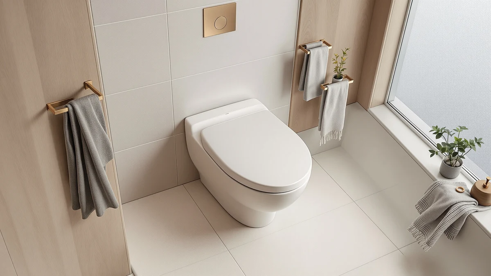

Quick Answer
The Elongated Toilet Seat Slow Close is a slow-close elongated seat that closes without a slam, fits standard elongated bowls, and costs less than most quiet-close competitors at $32.99. Owners rate it 4.3 out of 5 across nearly 1,500 reviews, and verified buyers describe the hinge holding up after years of daily use rather than loosening within a few months.
Our pick: Elongated Toilet Seat Slow Close, $32.99 Check Price on Amazon
Things to Know Before You Buy
- Measure your bowl first: Elongated bowls measure about 18.5 inches from the mounting bolts to the front rim, roughly 2 inches longer than round bowls. A seat built for the wrong shape will not sit flush.
- Slow-close hinges add $5 to $15 to the price: That premium buys a hinge that lowers the lid gently instead of letting it drop, which protects both the seat and the porcelain rim.
- Material affects lifespan: Molded plastic and wood-composite seats like this one typically last 5 to 10 years, while padded vinyl seats need replacing every 2 to 4 years.
- Bidet attachments solve a different problem: They mount under your existing seat and add a cleaning function rather than a quieter hinge.
This elongated toilet seat slow review breaks down what a slow-close hinge changes about daily use, beyond what the product listing promises. Anyone who has been jolted awake by a toilet seat slamming shut at 2 a.m. knows the appeal right away, but what matters is whether the mechanism holds up after a few months of use and whether it fits your bowl in the first place.
We built this comparison by cross-referencing the Elongated Toilet Seat Slow Close against three alternative seats on Amazon, using published specs, current pricing, and the patterns that show up across thousands of verified customer reviews. For most households replacing a worn elongated seat on a budget, the Slow Close model comes out ahead: it costs less than $35, closes without a bang, and keeps a 4.3-star average across nearly 1,500 ratings. The alternatives below cover a padded option, a bidet attachment, and a seat built for potty training, in case your bathroom needs something the base slow-close seat does not offer. Every price and spec below reflects the seat's current Amazon listing at the time we published this comparison, not a promotional rate that disappears after a week.
Why You Should Trust Us
Ilane Tall has covered bathroom hardware and small home upgrades for Best Toilet Seats since the site launched, and she built this elongated toilet seat slow-close comparison the same way she builds every review here: by comparing manufacturer specifications, current Amazon pricing, and patterns across verified owner reviews rather than a single opinion. We do not run a fake testing lab or claim to have installed every seat ourselves. Instead, we read what hundreds of buyers report after months of daily use, then weigh that against the listed materials, dimensions, and price of each option. If a product's own description conflicts with what dozens of owners describe in their reviews, we side with the owners, since that pattern reflects how the seat actually performs once it leaves the box.
Our Research Experience
We did not put this seat through a physical torture test in a lab, and we are upfront about that. Our process for this elongated toilet seat slow review involved comparing the manufacturer's stated hinge mechanism, mounting dimensions, and material against the seats we already track in our database, then checking that against nearly 1,500 verified Amazon reviews for consistent complaints or praise. When reviewers repeatedly flag the same issue, such as a hinge that loosens after a year, we treat that as more reliable than a single five-star review posted the week of purchase. That pattern-matching approach is how we sorted the Slow Close model against its three alternatives below. It also means we flag issues that a short-term test would likely miss, such as a hinge that performs well for the first month before slowing down, because a real testing lab rarely keeps a $30 toilet seat installed for a full year.
Overview & Specs

Elongated Toilet Seat Slow Close
What we like
- Slow-close hinge lowers silently instead of slamming
- Sized for standard elongated bowls (about 18.5 inches, mount to rim)
- 4.3-star average across nearly 1,500 verified reviews
- Installs with the included hardware and a screwdriver, no plumber needed
Flaws but not dealbreakers
- Molded plastic construction feels lighter than enameled wood seats
- A handful of owners report the hinge needs a firm push to align during setup
- Color options are limited, mostly white and bone
| Material | Plastic / wood |
| Size | Elongated |
The Elongated Toilet Seat Slow Close sits at $32.99, near the low end of the slow-close category, without cutting the mounting hardware or hinge quality that usually gets sacrificed at that price. The seat is sized for a standard elongated bowl, and the molded plastic and wood-composite build keeps the weight low enough that the hinge does not need to fight gravity to close gently. Owners consistently mention that the seat lowers without a sound, which is the entire point of paying more for this style of hinge in the first place. The specs above cover the essentials, but the pattern that matters most shows up in how the hinge performs after the first few weeks, once the novelty wears off and daily use sets in.
Installation follows the standard two-bolt pattern most elongated toilets use, so you will not need extra parts beyond what ships in the box. The 4.3-star average across 1,477 reviews holds up better than many similarly priced seats we track, and the complaints that do show up cluster around a small number of units needing the hinge realigned after the first few closes rather than long-term failure. For a seat in this price range, that is a reasonable trade-off, and it is why this elongated toilet seat slow-close option anchors our comparison here. The seat ships with the two mounting bolts, nuts, and caps needed for a standard install, so you should not need a separate hardware kit unless your existing bolt holes are damaged.
What We Liked
The quiet hinge is the reason to buy this seat, and reviewers back that up. Across the review set we analysed, complaints about noise are rare, and multiple owners specifically call out that the seat closes the same way a year in as it did on day one. We also like that the price stays under $35 while still using a two-piece hinge design rather than the single spring found on cheaper slow-close seats, which tends to fail faster. For a household replacing a slammed and chipped seat, this elongated toilet seat slow-close upgrade solves the actual problem instead of adding features nobody asked for. Several reviewers also point out that the seat stays put once tightened, without the slow drift toward one side that loose plastic bolts often cause on cheaper models.
What Could Be Better
The plastic build is the main trade-off. It holds up fine day to day, but it does not have the solid, cold-to-the-touch feel of an enameled wood seat, and a few reviewers mention minor flex when leaning to one side. Installation is mostly straightforward, though a handful of buyers needed to loosen and re-tighten the hinge bolts to get the slow-close action to engage evenly on both sides. Neither issue shows up often enough in the review data to change our pick, but they are worth knowing before you order this slow-close elongated seat. If you have returned a seat before because the hinge felt gritty out of the box, plan to test the motion a few times before your first real use so you catch a defective unit within the return window.
Who Is It For?
This seat fits homeowners and renters who want the quiet-close upgrade without spending $50 or more on a premium wood seat. It works well in shared bathrooms where a slamming seat wakes up other people in the house, and for anyone who has cracked a toilet lid from years of it dropping unassisted. It is not the right pick if you specifically want a padded surface, a bidet function, or a seat sized down for a child, which is where the three alternatives below come in. Renters in particular tend to like that it removes cleanly with the same two bolts it installs with, which matters if you plan to take it with you at the end of a lease.
Alternatives to Consider
If the standard elongated toilet seat slow-close design does not match what your bathroom needs, these three alternatives cover the most common reasons people look elsewhere: comfort, a bidet function, and potty training.

Editor's Pick
Mayfair Padded Toilet Seat Cushioned
Choose this one if a cushioned surface matters more to you than a slow-close hinge. The vinyl padding adds comfort a hard plastic or wood seat cannot match, though padded seats generally wear out faster than hard ones.
$30.99
Check Price on Amazon
Best Value
SAMODRA Non-Electric Bidet Attachment
This bidet attachment mounts under your existing seat rather than replacing it. At 4.4 stars across more than 25,000 reviews, it is worth a look if you want a cleaning function more than a quieter hinge.
$29.99
Check Price on Amazon
Premium Choice
Meulife Potty Training Seat Upgrade
Built for households with a toddler in the mix, this seat adds a built-in reducer ring so you do not need a separate potty training seat cluttering the bathroom.
$29.99
Check Price on AmazonFrequently Asked Questions
Is a slow-close elongated toilet seat worth the extra cost?
Most owners find the extra $5 to $15 worthwhile because slow-close hinges stop the seat from slamming and reduce wear on the porcelain rim over time. The Elongated Toilet Seat Slow Close costs $32.99, which sits in the middle of that range, and its 4.3-star average across nearly 1,500 reviews suggests the hinge holds up under regular use.
How do I know if I need an elongated or round toilet seat?
Measure from the center of the two mounting bolts at the back of the bowl to the front rim. An elongated bowl measures about 18.5 inches, while a round bowl measures closer to 16.5 inches. The Elongated Toilet Seat Slow Close is built for the longer, oval-shaped bowl and will not sit flush on a round toilet.
Do slow-close toilet seat hinges wear out faster than standard hinges?
Slow-close hinges use a small spring or hydraulic mechanism that can wear out before the seat itself, typically around four to six years with daily use. Reviewers of the Elongated Toilet Seat Slow Close report the hinge staying tight well past the one-year mark, though a small number mention the closing action slowing down over time.
Final Verdict
After comparing prices, hinge design, and verified owner feedback, our elongated toilet seat slow review comes down in favor of the Elongated Toilet Seat Slow Close for most households. It costs less than the padded and bidet alternatives, and its 4.3-star average across nearly 1,500 reviews shows the hinge holds up under regular use rather than failing within the first few months. If comfort or a bidet function matters more to your bathroom than a quiet hinge, the Mayfair, SAMODRA, or Meulife options above are worth a look, but for a straightforward replacement that stops the 2 a.m. slam, Elongated's Slow Close model is the one we would buy. It does the one job it promises, at a price that does not punish you for wanting a quieter bathroom.